OpenOffice学习笔记
概述aspose-wordspoiOpenOfficespire.docdocx4j其它方案ITextdocument4jdocx4j实现使用结论poi实现使用结论openoffice概述安装与部署Windows安装第一步：下载第二步：安装第三步：启动GUI程序第四步：启动服务第五步：检查是否启动成功第六步：安装中文语言包Linux安装第一步：下载第二步：创建文件夹第三步：上传文件第四步：解压文件第五步：安装rpm文件第六步：启动Docker安装第一步：搜索镜像第二步：拉取镜像第三步：查看镜像是否拉取成功第四步：运行镜像第五步：查看容器是否运行SpringBoot整合openoffice概述docx转pdf第一步：创建Springboot程序第二步：配置maven第三步：编写application.yml配置第四步：启动服务第五步：编写单元测试第六步：编写文档转换服务第七步：编写服务实现类第八步：编写接口第九步：编写简单前端页面第十步：启动项目测试java调用openoffice概述docx转pdf第一步：新建maven项目第二步：配置maven第三步：编写DocumentConverterUtil第四步：编写openoffice.properties第五步：编写测试类第六步：运行查看结果
概述
公司有一个需求，需要处理word文件，再将word文件转换成pdf文件响应给用户，服务器是Linux服务器，代码是跑在Linux上的，有些转pdf的技术只能跑在Windows平台上。
关于Word转PDF网上能找到的方案大概有六七种，其中5种如下：
- aspose-words
- docx4j
- openoffice
- poi
- spire.doc
aspose-words
Aspose公司旗下的最全的一套office文档管理方案，公司设在澳大利亚。
公司差不多是专做各种文件格式处理插件的，产品系列挺多
不需要依赖任何组件，不依赖操作系统。
收费，不考虑
1<dependency>2 <groupId>com.aspose</groupId>3 <artifactId>aspose-words</artifactId>4 <version>22.11</version>5 <classifier>jdk17</classifier>6</dependency>
poi
大名鼎鼎的apache的开源组件，应用非常广泛
组件拆分较细，引用一些类库，但都问题不大，不依赖操作系统，经常被用于excel文档处理
OpenOffice
Apache旗下又一开源组件，前身是1998年一家德国公司StarDivision所研发出来的一个办公室软件，称之为StarOffice。1999年8月被sun公司收购。2010年团队成员分家，分出来的一批成立了新团队做一个LibreOffice。2011年6月Oracle将其捐赠给Apache基金会
OpenOffice本身就是一套Office软件，该方案需要使用jodconverter组件配合OpenOffice完成转换，推荐使用此方案
jodconverter：https://sourceforge.net/projects/jodconverter/files/
JODConverter，是一个Java的OpenDocument文件转换器，可以进行许多文件格式的转换。它依赖于OpenOffice.org或者LibreOffice提供的服务来进行转换，它能将Microsoft Office文档（Word，Excel，PowerPoint）转换为PDF格式。
spire.doc
收费，用公司名和邮箱可以申请一个月的试用license，不考虑
docx4j
澳大利亚一公司赞助的开源组件
有一个开源版，还有一个Docx4j Enterprise Edition，开源版转换效果不行，表格严重错位，与原版格式严重失真
不依赖其它组件，不依赖操作系统
其它方案
IText
IText是直接操作PDF的，不是docx转pdf，而且java API非常难用
xxxxxxxxxx51<dependency>2 <groupId>com.lowagie</groupId>3 <artifactId>itext</artifactId>4 <version>4.2.2</version>5</dependency>
document4j
document4j是依赖于office软件，Linux无法使用
docx4j实现
使用
创建项目：

pom文件依赖如下：
x1 2<project xmlns="http://maven.apache.org/POM/4.0.0" xmlns:xsi="http://www.w3.org/2001/XMLSchema-instance"3 xsi:schemaLocation="http://maven.apache.org/POM/4.0.0 https://maven.apache.org/xsd/maven-4.0.0.xsd">4 <modelVersion>4.0.0</modelVersion>5 <parent>6 <groupId>org.springframework.boot</groupId>7 <artifactId>spring-boot-starter-parent</artifactId>8 <version>2.7.1</version>9 <relativePath/> <!-- lookup parent from repository -->10 </parent>11 <groupId>mao</groupId>12 <artifactId>docx4j-word-to-pdf</artifactId>13 <version>0.0.1-SNAPSHOT</version>14 <name>docx4j-word-to-pdf</name>15 <description>docx4j-word-to-pdf</description>16
17 <properties>18 <java.version>17</java.version>19 </properties>20
21 <dependencies>22 <dependency>23 <groupId>org.springframework.boot</groupId>24 <artifactId>spring-boot-starter</artifactId>25 </dependency>26
27 <dependency>28 <groupId>org.springframework.boot</groupId>29 <artifactId>spring-boot-starter-test</artifactId>30 <scope>test</scope>31 </dependency>32
33 <dependency>34 <groupId>org.docx4j</groupId>35 <artifactId>docx4j-JAXB-Internal</artifactId>36 <version>8.3.1</version>37 </dependency>38 <dependency>39 <groupId>org.docx4j</groupId>40 <artifactId>docx4j-JAXB-ReferenceImpl</artifactId>41 <version>8.3.1</version>42 </dependency>43 <dependency>44 <groupId>org.docx4j</groupId>45 <artifactId>docx4j-export-fo</artifactId>46 <version>8.3.1</version>47 </dependency>48
49 </dependencies>50
51 <build>52 <plugins>53 <plugin>54 <groupId>org.springframework.boot</groupId>55 <artifactId>spring-boot-maven-plugin</artifactId>56 </plugin>57 </plugins>58 </build>59
60</project>
编写工具类：
xxxxxxxxxx1141package mao.docx4jwordtopdf.utils;2
3import org.apache.commons.compress.utils.IOUtils;4import org.docx4j.Docx4J;5import org.docx4j.fonts.IdentityPlusMapper;6import org.docx4j.fonts.Mapper;7import org.docx4j.fonts.PhysicalFont;8import org.docx4j.fonts.PhysicalFonts;9import org.docx4j.openpackaging.packages.WordprocessingMLPackage;10import org.slf4j.Logger;11import org.slf4j.LoggerFactory;12
13import javax.servlet.http.HttpServletResponse;14import java.io.File;15import java.io.FileOutputStream;16import java.util.UUID;17
18/**19 * Project name(项目名称)：docx4j-word-to-pdf20 * Package(包名): mao.docx4jwordtopdf.utils21 * Class(类名): DocxToPdfUtils22 * Author(作者）: mao23 * Author QQ：129619324524 * GitHub：https://github.com/maomao124/25 * Date(创建日期)： 2023/11/2526 * Time(创建时间)： 18:0627 * Version(版本): 1.028 * Description(描述)： docx转pdf29 */30
31public class DocxToPdfUtils32{33 private static final Logger log = LoggerFactory.getLogger(DocxToPdfUtils.class);34
35
36 /**37 * docx转pdf38 *39 * @param docxPath docx文件路径40 * @param pdfPath pdf文件路径41 * @throws Exception 异常42 */43 public static void convertDocxToPdf(String docxPath, String pdfPath) throws Exception44 {45
46 FileOutputStream fileOutputStream = null;47 try48 {49 File file = new File(docxPath);50 fileOutputStream = new FileOutputStream(new File(pdfPath));51 WordprocessingMLPackage mlPackage = WordprocessingMLPackage.load(file);52 setFontMapper(mlPackage);53 Docx4J.toPDF(mlPackage, new FileOutputStream(new File(pdfPath)));54 }55 catch (Exception e)56 {57 e.printStackTrace();58 log.error("docx文档转换为PDF失败");59 }60 finally61 {62 IOUtils.closeQuietly(fileOutputStream);63 }64 }65
66 /**67 * 加载字体文件（解决linux环境下无中文字体问题）68 *69 * @param mlPackage {@link WordprocessingMLPackage}70 * @throws Exception 异常71 */72 private static void setFontMapper(WordprocessingMLPackage mlPackage) throws Exception73 {74 Mapper fontMapper = new IdentityPlusMapper();75 //加载字体文件（解决linux环境下无中文字体问题）76 if (PhysicalFonts.get("SimSun") == null)77 {78 System.out.println("加载本地SimSun字体库");79 //PhysicalFonts.addPhysicalFonts("SimSun", WordUtils.class.getResource("/fonts/SIMSUN.TTC"));80 }81 fontMapper.put("隶书", PhysicalFonts.get("LiSu"));82 fontMapper.put("宋体", PhysicalFonts.get("SimSun"));83 fontMapper.put("微软雅黑", PhysicalFonts.get("Microsoft Yahei"));84 fontMapper.put("黑体", PhysicalFonts.get("SimHei"));85 fontMapper.put("楷体", PhysicalFonts.get("KaiTi"));86 fontMapper.put("新宋体", PhysicalFonts.get("NSimSun"));87 fontMapper.put("华文行楷", PhysicalFonts.get("STXingkai"));88 fontMapper.put("华文仿宋", PhysicalFonts.get("STFangsong"));89 fontMapper.put("仿宋", PhysicalFonts.get("FangSong"));90 fontMapper.put("幼圆", PhysicalFonts.get("YouYuan"));91 fontMapper.put("华文宋体", PhysicalFonts.get("STSong"));92 fontMapper.put("华文中宋", PhysicalFonts.get("STZhongsong"));93 fontMapper.put("等线", PhysicalFonts.get("SimSun"));94 fontMapper.put("等线 Light", PhysicalFonts.get("SimSun"));95 fontMapper.put("华文琥珀", PhysicalFonts.get("STHupo"));96 fontMapper.put("华文隶书", PhysicalFonts.get("STLiti"));97 fontMapper.put("华文新魏", PhysicalFonts.get("STXinwei"));98 fontMapper.put("华文彩云", PhysicalFonts.get("STCaiyun"));99 fontMapper.put("方正姚体", PhysicalFonts.get("FZYaoti"));100 fontMapper.put("方正舒体", PhysicalFonts.get("FZShuTi"));101 fontMapper.put("华文细黑", PhysicalFonts.get("STXihei"));102 fontMapper.put("宋体扩展", PhysicalFonts.get("simsun-extB"));103 fontMapper.put("仿宋_GB2312", PhysicalFonts.get("FangSong_GB2312"));104 fontMapper.put("新細明體", PhysicalFonts.get("SimSun"));105 //解决宋体（正文）和宋体（标题）的乱码问题106 PhysicalFonts.put("PMingLiU", PhysicalFonts.get("SimSun"));107 PhysicalFonts.put("新細明體", PhysicalFonts.get("SimSun"));108 //宋体&新宋体109 PhysicalFont simsunFont = PhysicalFonts.get("SimSun");110 fontMapper.put("SimSun", simsunFont);111 //设置字体112 mlPackage.setFontMapper(fontMapper);113 }114}
编写单元测试：
xxxxxxxxxx351package mao.docx4jwordtopdf.utils;2
3import org.junit.jupiter.api.Test;4
5import static org.junit.jupiter.api.Assertions.*;6
7/**8 * Project name(项目名称)：docx4j-word-to-pdf9 * Package(包名): mao.docx4jwordtopdf.utils10 * Class(测试类名): DocxToPdfUtilsTest11 * Author(作者）: mao12 * Author QQ：129619324513 * GitHub：https://github.com/maomao124/14 * Date(创建日期)： 2023/11/2515 * Time(创建时间)： 18:1416 * Version(版本): 1.017 * Description(描述)： 测试类18 */19
20class DocxToPdfUtilsTest21{22
23 24 void convertDocxToPdf() throws Exception25 {26 DocxToPdfUtils.convertDocxToPdf("./test.docx","./test.pdf");27 }28
29 30 void convertDocxToPdf2() throws Exception31 {32 //相对复杂的docx33 DocxToPdfUtils.convertDocxToPdf("./out.docx","./out.pdf");34 }35}
test.docx内容如下：

运行

test.pdf输出结果如下：

结论
test.pdf目前没什么大问题，字体和格式有点问题，但是out.pdf就乱了，因为out.docx是公司的合同文档，这里就不放出结果了，而且输出太慢了，CPU占用较高，会拖垮服务器的，不考虑
poi实现
使用
创建springboot程序，pom文件如下：
xxxxxxxxxx561 2<project xmlns="http://maven.apache.org/POM/4.0.0" xmlns:xsi="http://www.w3.org/2001/XMLSchema-instance"3 xsi:schemaLocation="http://maven.apache.org/POM/4.0.0 https://maven.apache.org/xsd/maven-4.0.0.xsd">4 <modelVersion>4.0.0</modelVersion>5 <parent>6 <groupId>org.springframework.boot</groupId>7 <artifactId>spring-boot-starter-parent</artifactId>8 <version>2.7.1</version>9 <relativePath/> <!-- lookup parent from repository -->10 </parent>11 <groupId>mao</groupId>12 <artifactId>poi-word-to-pdf</artifactId>13 <version>0.0.1-SNAPSHOT</version>14 <name>poi-word-to-pdf</name>15 <description>poi-word-to-pdf</description>16 <properties>17 <java.version>17</java.version>18 </properties>19 <dependencies>20
21 <dependency>22 <groupId>org.springframework.boot</groupId>23 <artifactId>spring-boot-starter</artifactId>24 </dependency>25
26 <dependency>27 <groupId>org.springframework.boot</groupId>28 <artifactId>spring-boot-starter-test</artifactId>29 <scope>test</scope>30 </dependency>31
32 <dependency>33 <groupId>org.apache.poi</groupId>34 <artifactId>poi-ooxml</artifactId>35 <version>4.1.2</version>36 </dependency>37 <!-- Word转PDF操作依赖 -->38 <dependency>39 <groupId>fr.opensagres.xdocreport</groupId>40 <artifactId>fr.opensagres.poi.xwpf.converter.pdf-gae</artifactId>41 <version>2.0.2</version>42 </dependency>43
44 </dependencies>45
46 <build>47 <plugins>48 <plugin>49 <groupId>org.springframework.boot</groupId>50 <artifactId>spring-boot-maven-plugin</artifactId>51 </plugin>52 </plugins>53 </build>54
55</project>56
编写转换工具类DocxToPdfUtils：
xxxxxxxxxx641package mao.poiwordtopdf.utils;2
3
4import fr.opensagres.poi.xwpf.converter.pdf.PdfConverter;5import fr.opensagres.poi.xwpf.converter.pdf.PdfOptions;6import org.apache.poi.xwpf.usermodel.XWPFDocument;7import java.io.*;8
9
10import java.io.*;11
12/**13 * Project name(项目名称)：poi-word-to-pdf14 * Package(包名): mao.poiwordtopdf.utils15 * Class(类名): DocxToPdfUtils16 * Author(作者）: mao17 * Author QQ：129619324518 * GitHub：https://github.com/maomao124/19 * Date(创建日期)： 2023/11/2520 * Time(创建时间)： 19:2621 * Version(版本): 1.022 * Description(描述)： 无23 */24
25public class DocxToPdfUtils26{27 /**28 * word转pdf29 *30 * @param wordPath word文件路径31 * @param pdfPath pdf文件路径32 * @throws IOException ioexception33 */34 public static void wordToPDF(String wordPath, String pdfPath) throws IOException35 {36 XWPFDocument xwpfDocument = null;37 InputStream inputStream = null;38 OutputStream outputStream = null;39 try40 {41 inputStream = new FileInputStream(wordPath);42 xwpfDocument = new XWPFDocument(inputStream);43 PdfOptions pdfOptions = PdfOptions.create();44 outputStream = new FileOutputStream(pdfPath);45 PdfConverter.getInstance().convert(xwpfDocument, outputStream, pdfOptions);46 }47 finally48 {49 if (xwpfDocument != null)50 {51 xwpfDocument.close();52 }53 if (inputStream != null)54 {55 inputStream.close();56 }57 if (outputStream != null)58 {59 outputStream.close();60 }61 }62 }63}64
编写测试类：
xxxxxxxxxx321package mao.poiwordtopdf.utils;2
3import org.junit.jupiter.api.Test;4import org.springframework.boot.test.context.SpringBootTest;5
6import java.io.IOException;7
8import static org.junit.jupiter.api.Assertions.*;9
10/**11 * Project name(项目名称)：poi-word-to-pdf12 * Package(包名): mao.poiwordtopdf.utils13 * Class(测试类名): DocxToPdfUtilsTest14 * Author(作者）: mao15 * Author QQ：129619324516 * GitHub：https://github.com/maomao124/17 * Date(创建日期)： 2023/11/2518 * Time(创建时间)： 19:3619 * Version(版本): 1.020 * Description(描述)： 测试类21 */22
23class DocxToPdfUtilsTest25{26
27 28 void wordToPDF() throws IOException29 {30 DocxToPdfUtils.wordToPDF("./test.docx", "test.pdf");31 }32}
还是那个docx文件，测试结果如下：

结论
效果不好，性能不好，不考虑
openoffice
概述
OpenOffice.org 是一套跨平台的办公室软件套件，能在 Windows、Linux、MacOS X (X11)、和 Solaris 等操作系统上执行。它与各个主要的办公室软件套件兼容。OpenOffice.org 是开源软件，任何人都可以免费下载、使用、及推广它。
OpenOffice.org 的主要模块有 Writer (文本文档)/Calc (电子表格)/Impress (演示文稿)/Math (公式计算)/Draw (画图)/Base (数据库)
OpenOffice.org 不仅是六大组件的组合，而且与同类产品不同的是，本套件不是独立软件模块形式创建的，从一开始，它就被设计成一个完整的办公软件包
推荐使用jodconverter调用OpenOffice来实现docx转PDF，OpenOffice不仅支持word，还支持html、ppt、excel等转PDF
安装与部署
Windows安装
第一步：下载
进入下载界面：https://sourceforge.net/projects/openofficeorg.mirror/files/

选择一个版本
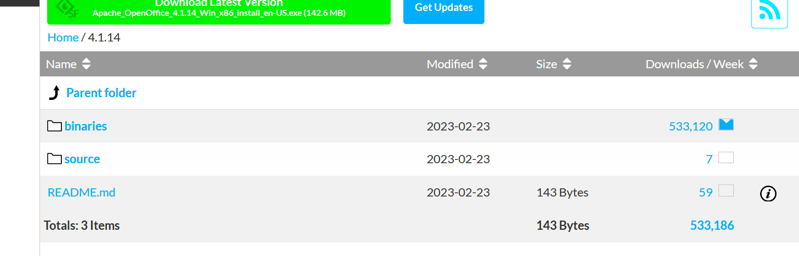
选择二进制包
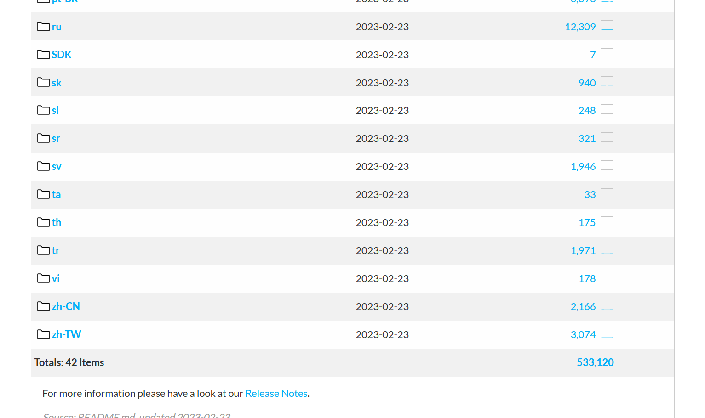
选择中文简体(zh-cn)

下载第一个和第二个
- Apache_OpenOffice_4.1.14_Win_x86_install_zh-CN.exe
- Apache_OpenOffice_4.1.14_Win_x86_langpack_zh-CN.exe
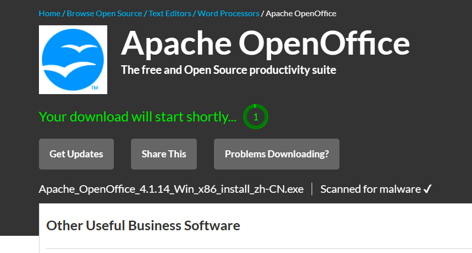
出现这个界面，请等待几秒，即将开始下载
第二步：安装
将下载完成的Apache_OpenOffice_4.1.14_Win_x86_install_zh-CN.exe文件双击打开
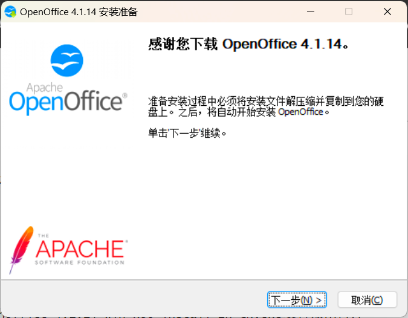
选择安装位置


点击下一步

下一步

下一步

下一步
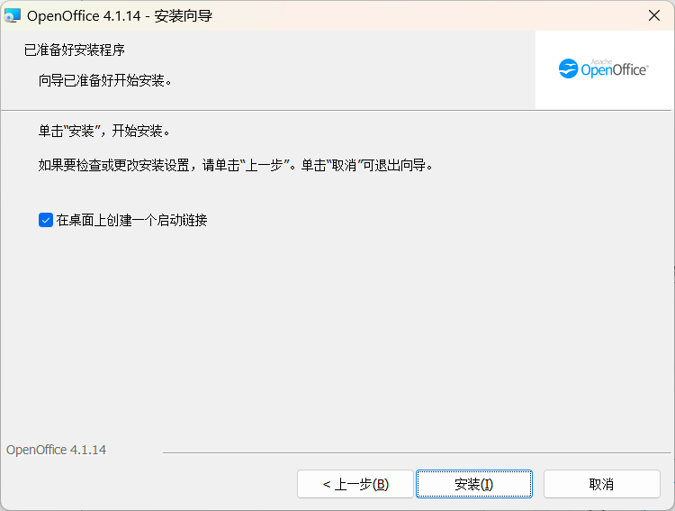
等待安装

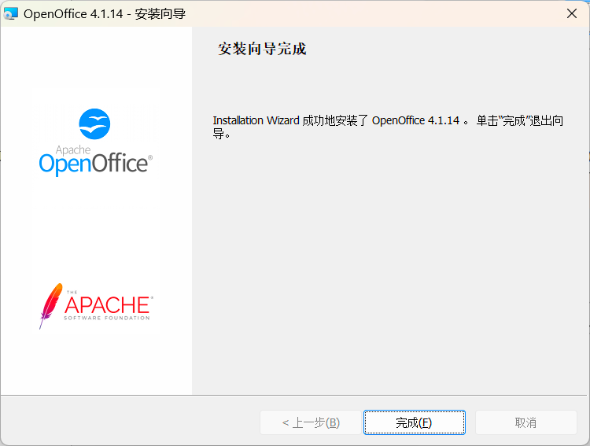
第三步：启动GUI程序
双击打开GUI文件，界面如下：


程序根目录如下：

第四步：启动服务
进入安装目录program目录下
启动服务的命令：
xxxxxxxxxx11./soffice -headless -accept="socket,host=127.0.0.1,port=8100;urp;" -nofirststartwizard或者：
xxxxxxxxxx11./soffice -headless -accept="socket,host=0.0.0.0,port=8100;urp;" -nofirststartwizard
- host：绑定的ip，配置为0.0.0.0，则远程ip能使用，配置为127.0.0.1，则只能本地访问
- port：服务启动的端口号
xxxxxxxxxx201PS C:\Program Files (x86)\OpenOffice 4> ls2
3
4 目录: C:\Program Files (x86)\OpenOffice 45
6
7Mode LastWriteTime Length Name8---- ------------- ------ ----9d----- 2023/11/22 16:18 help10d----- 2023/11/22 16:18 presets11d----- 2023/11/22 16:18 program12d----- 2023/11/22 16:18 readmes13d----- 2023/11/22 16:18 share14-a---- 2023/2/9 18:39 10440 readme.html15-a---- 2023/2/9 18:39 10017 readme.txt16
17
18PS C:\Program Files (x86)\OpenOffice 4> cd .\program\19PS C:\Program Files (x86)\OpenOffice 4\program> ./soffice -headless -accept="socket,host=0.0.0.0,port=8100;urp;" -nofirststartwizard20PS C:\Program Files (x86)\OpenOffice 4\program>

点击允许
不报错，为启动成功
第五步：检查是否启动成功
xxxxxxxxxx11netstat -ano
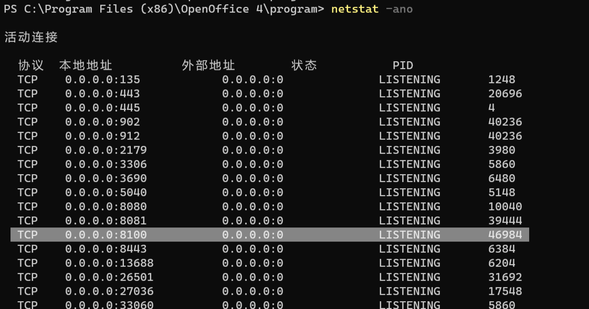
可以看到8100端口已经在使用了，pid为46984
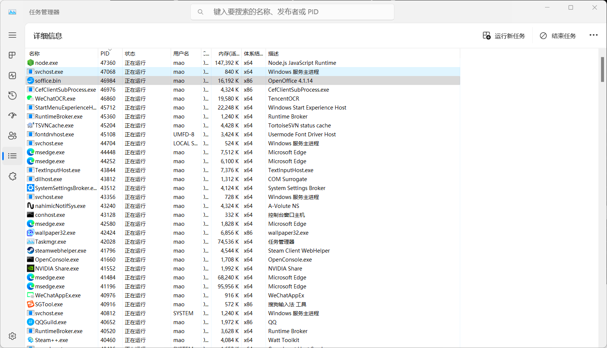
打开任务管理器，可以看到46984的确为openoffice
第六步：安装中文语言包
如果下载的openoffice本来就是中文的，则没有必要再安装，可以跳过此步骤


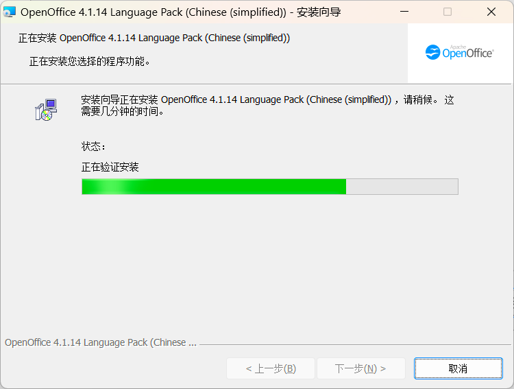
Linux安装
以centos为例
第一步：下载
进入下载界面：https://sourceforge.net/projects/openofficeorg.mirror/files/
这次选择第五个：Apache_OpenOffice_4.1.14_Linux_x86_install-rpm_zh-CN.tar.gz
第二步：创建文件夹
连接linux服务器，在/usr/local目录下创建openoffce文件夹
xxxxxxxxxx21cd /usr/local2mkdir openoffice
第三步：上传文件
将刚刚下载完成的压缩包上传到linux服务器的openoffice文件夹里
第四步：解压文件
命令：
xxxxxxxxxx11tar tar -zxvf Apache_OpenOffice_4.1.14_Linux_x86_install-rpm_zh-CN.tar.gz
第五步：安装rpm文件
进入zh-CN/RPMS/目录下安装rpm文件
命令：
xxxxxxxxxx11yum localinstall *.rpm
安装完后会在当前目录下生成一个desktop-integration目录
进入desktop-integration目录，执行：
xxxxxxxxxx11yum localinstall openoffice4.1.14-redhat-menus-4.1.14-9808.noarch.rpm
第六步：启动
命令：
xxxxxxxxxx11/opt/openoffice4/program/soffice -headless -accept="socket,host=127.0.0.1,port=8100;urp;" -nofirststartwizard
- 如果报错：
错误：Could not find a Java Runtime Environment，这是没有安装jdk导致的 - 如果报错：
/opt/openoffice4/program/soffice.bin: error while loading shared libraries: libXext.so.6: cannot open shared object file: No such file or directory，这是由于缺少lib库文件，执行yum install libXext.x86_64，然后执行cp -a usr/lib64/libXext.so.6 /opt/openoffice4/program/复制到openoffice目录 - 如果报错：
no suitable windowing system found, exiting，这是没有图形界面支持导致的，openoffice运行需要图形界面，执行yum groupinstall "X Window System" - 预览如果出现中文乱码、中文不显示的问题，还需要安装安装中文字体，这个问题只有在linux才会有
Docker安装
第一步：搜索镜像
命令：
xxxxxxxxxx11docker search openoffice
xxxxxxxxxx281PS C:\Users\mao> docker search openoffice2NAME DESCRIPTION STARS OFFICIAL AUTOMATED3kasmweb/openoffice 24rafaeltuelho/openoffice3-daemon Openoffice 3 headless daemon Image running t… 35umnelevator/openoffice 46xiaojun207/openoffice4-daemon Image running the OpenOffice 4 soffice daemo… 77expertsystems/openoffice OpenOffice in server mode 5 [OK]8upresentit/openoffice OpenOffice 4.1 running as service on port 81… 19timonier/openoffice The free and Open Source productivity suite 0 [OK]10chrisdaish/openoffice Unofficial build of Apache OpenOffice forwar… 0 [OK]11rolesle/openoffice Apache OpenOffice4 012xzxiaoshan/openoffice openoffice 镜像，默认启动openoffice服务，主… 113cafetime/openoffice-jdk openoffice-jdk 0 [OK]14evan11/openoffice4-java8 基于openjdk:8-jdk 集成openoffice4 部署spring… 215bdhhbdhh/openoffice4 OpenOffice 4 server mode 016goodrainapps/openoffice 017kuschzzp/openoffice openoffice:4.1.13镜像，内置了字体，解决中文… 118patriciorangles/openoffice-headless Headless de OpenOffice para OpenERP V7 019akiraheid/openoffice An office software suite for word processing… 020wangzhishuai/openoffice openoffice4.1.6+jdk1.8+linux64 EXPOSE 8100 121xzxiaoshan/openoffice-base OpenOffice 基础环境镜像 022wjf8882300/openoffice 用于word、excel、powerpoint转为pdf文件 023eliu/openoffice 容器化启动 openoffice 并解决中文无法显示的问… 024safloresg/openoffice 025bdhhbdhh/openoffice3 OpenOffice 3 server mode 026954l/openoffice 027openoffice200/docker101tutorial 028PS C:\Users\mao>
本次使用xiaojun207的镜像
第二步：拉取镜像
命令：
xxxxxxxxxx11docker pull xiaojun207/openoffice4-daemon
等待下载完成：

xxxxxxxxxx201PS C:\Users\mao> docker pull xiaojun207/openoffice4-daemon2Using default tag: latest3latest: Pulling from xiaojun207/openoffice4-daemon4ab5ef0e58194: Pull complete5b345d96ba7d9: Pull complete6984a22aaecc3: Pull complete794cb19074099: Pull complete8cc43233dd098: Pull complete92804181f079c: Pull complete10235c5d6b9cf4: Pull complete119205c67b4251: Pull complete12ecde98a5a60d: Pull complete13383110ac3d5d: Pull complete14Digest: sha256:ba9b546d8fefe4d623be319efa41735c8dd36a5c040e8f70461e2ca1ee842d6215Status: Downloaded newer image for xiaojun207/openoffice4-daemon:latest16docker.io/xiaojun207/openoffice4-daemon:latest17
18What's Next?19 View summary of image vulnerabilities and recommendations → docker scout quickview xiaojun207/openoffice4-daemon20PS C:\Users\mao>
第三步：查看镜像是否拉取成功
命令：
xxxxxxxxxx11docker images或者：
xxxxxxxxxx11docker images xiaojun207/openoffice4-daemon
xxxxxxxxxx41PS C:\Users\mao> docker images xiaojun207/openoffice4-daemon2REPOSITORY TAG IMAGE ID CREATED SIZE3xiaojun207/openoffice4-daemon latest c0a14707c109 3 years ago 1.2GB4PS C:\Users\mao>
第四步：运行镜像
命令：
xxxxxxxxxx11docker run -d --name openoffice -p 8300:8100 -v D:/docker/openoffice:/data/ xiaojun207/openoffice4-daemon:latest
xxxxxxxxxx31PS C:\Users\mao> docker run -d --name openoffice -p 8300:8100 -v D:/docker/openoffice:/data/ xiaojun207/openoffice4-daemon:latest24da0e56c24da178145e531c05922ec2cd3592d88ab27ec2f4c1114f9a74dcdfa3PS C:\Users\mao>
第五步：查看容器是否运行
命令：
xxxxxxxxxx11docker ps
xxxxxxxxxx61PS C:\Users\mao> docker ps2CONTAINER ID IMAGE COMMAND CREATED STATUS PORTS NAMES34da0e56c24da xiaojun207/openoffice4-daemon:latest "uid_entrypoint /bin…" 13 seconds ago Up 13 seconds 0.0.0.0:8300->8100/tcp openoffice4619cebf9f2dd 7fff914c4a61 "/dashboard --insecu…" 15 minutes ago Up 15 minutes k8s_kubernetes-dashboard_kubernetes-dashboard-68955f84f4-ccwfd_kubernetes-dashboard_fd1c36df-d824-4d4f-a52a-a5f7152d8fa2_705d9aa185088d1 7801cfc6d5c0 "/metrics-sidecar" 15 minutes ago Up 15 minutes k8s_dashboard-metrics-scraper_dashboard-metrics-scraper-748b4f5b9d-g4h26_kubernetes-dashboard_b76f2aa6-e30a-40f8-b865-2a9a97796ee0_376PS C:\Users\mao>
第一个为openoffice，状态是up，则为启动成功，外部端口为8300，第二个和第三个为k8s
日志如下：
xxxxxxxxxx41PS C:\Users\mao> docker logs openoffice2Starting soffice daemon in headless mode as user default [id uid=10001(default) gid=0(root) groups=0(root)]3 soffice daemon will listen on Port 81004PS C:\Users\mao>
SpringBoot整合openoffice
概述
因业务需要，需要使用SpringBoot将docx文件转换成PDF文件，再将PDF文件响应给用户
docx转pdf
第一步：创建Springboot程序
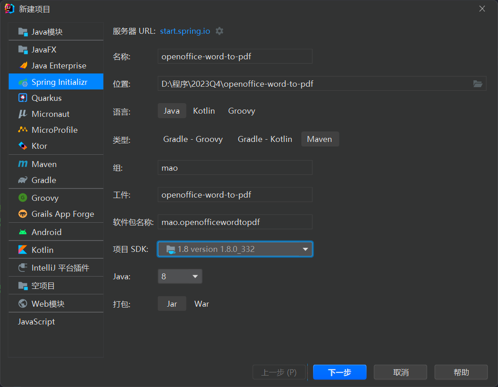
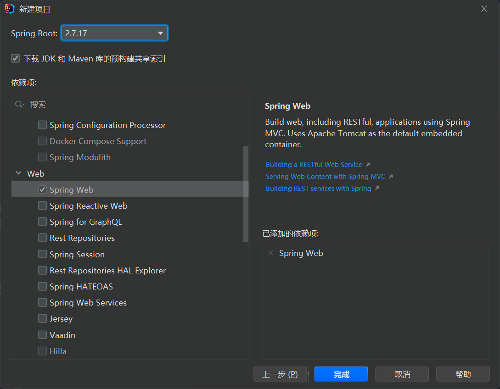
第二步：配置maven
xxxxxxxxxx791 2<project xmlns="http://maven.apache.org/POM/4.0.0" xmlns:xsi="http://www.w3.org/2001/XMLSchema-instance"3 xsi:schemaLocation="http://maven.apache.org/POM/4.0.0 https://maven.apache.org/xsd/maven-4.0.0.xsd">4 <modelVersion>4.0.0</modelVersion>5 <parent>6 <groupId>org.springframework.boot</groupId>7 <artifactId>spring-boot-starter-parent</artifactId>8 <version>2.7.1</version>9 <relativePath/> <!-- lookup parent from repository -->10 </parent>11 <groupId>mao</groupId>12 <artifactId>openoffice-word-to-pdf</artifactId>13 <version>0.0.1-SNAPSHOT</version>14 <name>openoffice-word-to-pdf</name>15 <description>openoffice-word-to-pdf</description>16 <properties>17 <java.version>1.8</java.version>18 </properties>19 <dependencies>20 <dependency>21 <groupId>org.springframework.boot</groupId>22 <artifactId>spring-boot-starter-web</artifactId>23 </dependency>24
25 <dependency>26 <groupId>org.springframework.boot</groupId>27 <artifactId>spring-boot-starter-test</artifactId>28 <scope>test</scope>29 </dependency>30
31 <!--spring-boot lombok-->32 <dependency>33 <groupId>org.projectlombok</groupId>34 <artifactId>lombok</artifactId>35 <optional>true</optional>36 </dependency>37
38 <!--spring boot 使用openoffice服务 maven依赖-->39 <!--jodconverter 核心包 -->40 <!-- https://mvnrepository.com/artifact/org.jodconverter/jodconverter-core -->41 <dependency>42 <groupId>org.jodconverter</groupId>43 <artifactId>jodconverter-core</artifactId>44 <version>4.4.6</version>45 </dependency>46
47 <!--springboot支持包，里面包括了自动配置类 -->48 <!-- https://mvnrepository.com/artifact/org.jodconverter/jodconverter-spring-boot-starter -->49 <dependency>50 <groupId>org.jodconverter</groupId>51 <artifactId>jodconverter-spring-boot-starter</artifactId>52 <version>4.4.6</version>53 </dependency>54
55 <!--jodconverter 本地支持包 -->56 <!-- https://mvnrepository.com/artifact/org.jodconverter/jodconverter-local -->57 <dependency>58 <groupId>org.jodconverter</groupId>59 <artifactId>jodconverter-local</artifactId>60 <version>4.4.6</version>61 </dependency>62 </dependencies>63
64 <build>65 <plugins>66 <plugin>67 <groupId>org.springframework.boot</groupId>68 <artifactId>spring-boot-maven-plugin</artifactId>69 <configuration>70 <image>71 <builder>paketobuildpacks/builder-jammy-base:latest</builder>72 </image>73 </configuration>74 </plugin>75 </plugins>76 </build>77
78</project>79
第三步：编写application.yml配置
xxxxxxxxxx81jodconverter2 local3 enabledtrue4 # openoffice安装路径5 office-home'C:\Program Files (x86)\OpenOffice 4'6 max-tasks-per-process107 #openoffice端口号8 port-numbers8100
第四步：启动服务
如果报以下错误：
xxxxxxxxxx11"org.jodconverter.office.OfficeException: A process with acceptString 'socket,host=127.0.0.1,port=8100,tcpNoDelay=1;urp;StarOffice.ServiceManager' started but its pid could not be found"
原因：
- 项目启动目录中带有中文路径
- soffice的端口异常了不能正常关闭
- 操作系统环境问题
- 依赖版本问题
启动成功的控制台日志如下：
xxxxxxxxxx451 . ____ _ __ _ _2 /\\ / ___'_ __ _ _(_)_ __ __ _ \ \ \ \3 ( ( )\___ | '_ | '_| | '_ \/ _` | \ \ \ \4 \\/ ___)| |_)| | | | | || (_| | ) ) ) )5 ' |____| .__|_| |_|_| |_\__, | / / / /6 =========|_|==============|___/=/_/_/_/7 :: Spring Boot :: (v2.7.1)8
9 _____ _____ _______10 /\ \ /\ \ /::\ \11 /::\____\ /::\ \ /::::\ \12 /::::| | /::::\ \ /::::::\ \13 /:::::| | /::::::\ \ /::::::::\ \14 /::::::| | /:::/\:::\ \ /:::/~~\:::\ \15 /:::/|::| | /:::/__\:::\ \ /:::/ \:::\ \16 /:::/ |::| | /::::\ \:::\ \ /:::/ / \:::\ \17 /:::/ |::|___|______ /::::::\ \:::\ \ /:::/____/ \:::\____\18 /:::/ |::::::::\ \ /:::/\:::\ \:::\ \ |:::| | |:::| |19 /:::/ |:::::::::\____\/:::/ \:::\ \:::\____\|:::|____| |:::| |20 \::/ / ~~~~~/:::/ /\::/ \:::\ /:::/ / \:::\ \ /:::/ /21 \/____/ /:::/ / \/____/ \:::\/:::/ / \:::\ \ /:::/ /22 /:::/ / \::::::/ / \:::\ /:::/ /23 /:::/ / \::::/ / \:::\__/:::/ /24 /:::/ / /:::/ / \::::::::/ /25 /:::/ / /:::/ / \::::::/ /26 /:::/ / /:::/ / \::::/ /27 /:::/ / /:::/ / \::/____/28 \::/ / \::/ / ~~29 \/____/ \/____/30 :: Github (https://github.com/maomao124) ::31
322023-11-22 17:48:13.321 INFO 25232 --- [ main] m.o.OpenofficeWordToPdfApplication : Starting OpenofficeWordToPdfApplication using Java 1.8.0_332 on mao with PID 25232 (D:\程序\2023Q4\openoffice-word-to-pdf\target\classes started by mao in D:\程序\2023Q4\openoffice-word-to-pdf)332023-11-22 17:48:13.322 INFO 25232 --- [ main] m.o.OpenofficeWordToPdfApplication : No active profile set, falling back to 1 default profile: "default"342023-11-22 17:48:13.759 INFO 25232 --- [ main] o.s.b.w.embedded.tomcat.TomcatWebServer : Tomcat initialized with port(s): 8080 (http)352023-11-22 17:48:13.764 INFO 25232 --- [ main] o.apache.catalina.core.StandardService : Starting service [Tomcat]362023-11-22 17:48:13.764 INFO 25232 --- [ main] org.apache.catalina.core.StandardEngine : Starting Servlet engine: [Apache Tomcat/9.0.64]372023-11-22 17:48:13.808 INFO 25232 --- [ main] o.a.c.c.C.[Tomcat].[localhost].[/] : Initializing Spring embedded WebApplicationContext382023-11-22 17:48:13.808 INFO 25232 --- [ main] w.s.c.ServletWebServerApplicationContext : Root WebApplicationContext: initialization completed in 465 ms392023-11-22 17:48:14.057 INFO 25232 --- [er-offprocmng-0] o.j.local.office.OfficeDescriptor : soffice info (from exec path): Product: OpenOffice - Version: ??? - useLongOptionNameGnuStyle: false402023-11-22 17:48:14.091 INFO 25232 --- [ main] o.s.b.w.embedded.tomcat.TomcatWebServer : Tomcat started on port(s): 8080 (http) with context path ''412023-11-22 17:48:14.095 INFO 25232 --- [ main] m.o.OpenofficeWordToPdfApplication : Started OpenofficeWordToPdfApplication in 1.005 seconds (JVM running for 1.461)422023-11-22 17:48:14.157 WARN 25232 --- [er-offprocmng-0] o.j.l.office.LocalOfficeProcessManager : Profile dir 'C:\Users\mao\AppData\Local\Temp\.jodconverter_socket_host-127.0.0.1_port-8100_tcpNoDelay-1' already exists; deleting432023-11-22 17:48:14.170 INFO 25232 --- [er-offprocmng-0] o.j.l.office.LocalOfficeProcessManager : Starting process with --accept 'socket,host=127.0.0.1,port=8100,tcpNoDelay=1;urp;StarOffice.ServiceManager' and profileDir 'C:\Users\mao\AppData\Local\Temp\.jodconverter_socket_host-127.0.0.1_port-8100_tcpNoDelay-1'442023-11-22 17:48:14.809 INFO 25232 --- [er-offprocmng-0] o.j.local.office.OfficeConnection : Connected: 'socket,host=127.0.0.1,port=8100,tcpNoDelay=1'452023-11-22 17:48:14.810 INFO 25232 --- [er-offprocmng-0] o.j.l.office.LocalOfficeProcessManager : Started process; pid: 11904
第五步：编写单元测试
xxxxxxxxxx221package mao.openofficewordtopdf;2
3import org.jodconverter.core.DocumentConverter;4import org.junit.jupiter.api.Test;5import org.springframework.beans.factory.annotation.Autowired;6import org.springframework.boot.test.context.SpringBootTest;7
8import java.io.File;9
10class OpenofficeWordToPdfApplicationTests12{13 14 private DocumentConverter documentConverter;15
16 17 void contextLoads()18 {19 documentConverter.convert(new File("./test.docx")).to(new File("./test.pdf"));20 }21
22}
test.docx内容如下：
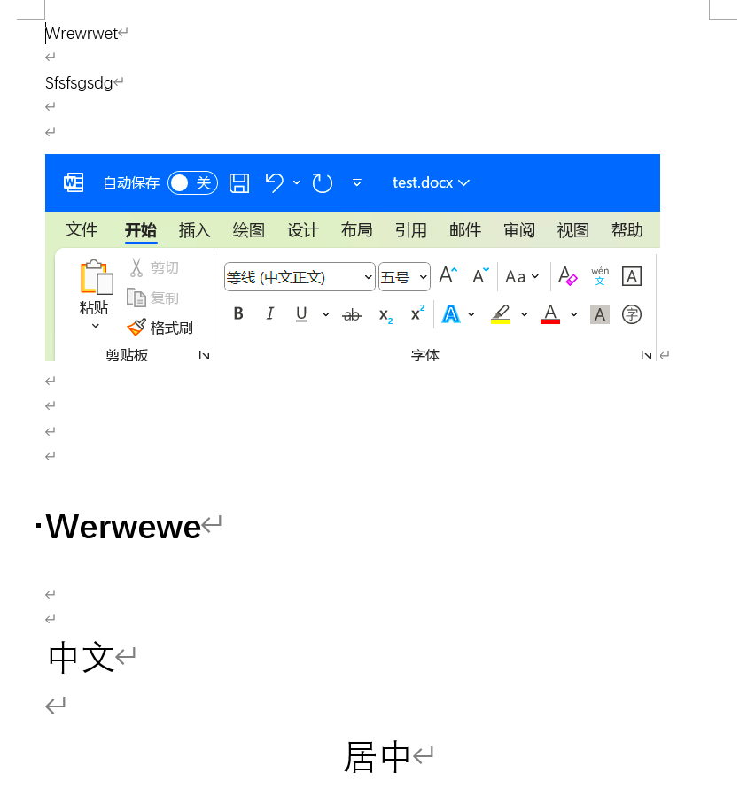
运行单元测试，日志输出如下：
xxxxxxxxxx412023-11-22 21:55:57.635 INFO 13336 --- [er-offprocmng-0] o.j.l.office.LocalOfficeProcessManager : Starting process with --accept 'socket,host=127.0.0.1,port=8100,tcpNoDelay=1;urp;StarOffice.ServiceManager' and profileDir 'C:\Users\mao\AppData\Local\Temp\.jodconverter_socket_host-127.0.0.1_port-8100_tcpNoDelay-1'22023-11-22 21:55:58.281 INFO 13336 --- [er-offprocmng-0] o.j.local.office.OfficeConnection : Connected: 'socket,host=127.0.0.1,port=8100,tcpNoDelay=1'32023-11-22 21:55:58.281 INFO 13336 --- [er-offprocmng-0] o.j.l.office.LocalOfficeProcessManager : Started process; pid: 3501642023-11-22 21:55:58.282 INFO 13336 --- [ter-poolentry-1] o.j.local.task.LocalConversionTask : Executing local conversion task [docx -> pdf]...
输出的PDF文件如下：
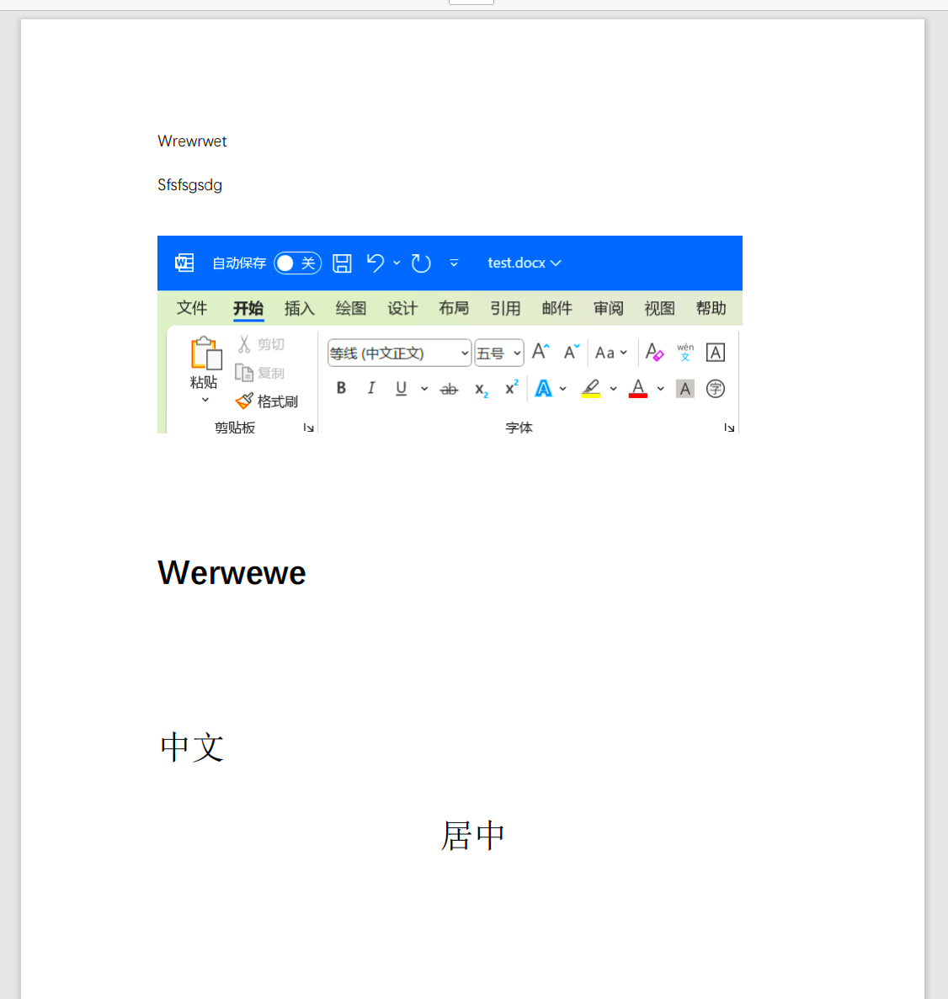
文件流转换示例：
xxxxxxxxxx71DocumentFormat documentFormatSrc = documentConverter.getFormatRegistry().getFormatByExtension("docx");2 DocumentFormat documentFormatTarget = documentConverter.getFormatRegistry().getFormatByExtension("pdf");3 documentConverter.convert(4 new FileInputStream(new File("./test.docx")))5 .as(documentFormatSrc)6 .to(new FileOutputStream("./test.pdf"))7 .as(documentFormatTarget).execute();
第六步：编写文档转换服务
xxxxxxxxxx491package mao.openofficewordtopdf.service;2
3import java.io.File;4import java.io.InputStream;5import java.io.OutputStream;6
7/**8 * Project name(项目名称)：openoffice-word-to-pdf9 * Package(包名): mao.openofficewordtopdf.service10 * Interface(接口名): DocumentConverterService11 * Author(作者）: mao12 * Author QQ：129619324513 * GitHub：https://github.com/maomao124/14 * Date(创建日期)： 2023/11/2315 * Time(创建时间)： 8:4916 * Version(版本): 1.017 * Description(描述)： 文档转换服务18 */19
20public interface DocumentConverterService21{22
23 /**24 * 文档转换25 *26 * @param sourcePath 来源路径字符串27 * @param targetPath 目标路径字符串28 */29 void converter(String sourcePath, String targetPath);30
31 /**32 * 文档转换33 *34 * @param sourcePath 来源路径35 * @param targetPath 目标路径36 */37 void converter(File sourcePath, File targetPath);38
39 /**40 * 文档转换41 *42 * @param inputStream 输入流43 * @param outputStream 输出流44 * @param sourceFileSuffix 源文件后缀45 * @param targetFileSuffix 目标文件后缀46 */47 void converter(InputStream inputStream, OutputStream outputStream,48 String sourceFileSuffix, String targetFileSuffix);49}
第七步：编写服务实现类
xxxxxxxxxx651package mao.openofficewordtopdf.service.impl;2
3import lombok.SneakyThrows;4import lombok.extern.slf4j.Slf4j;5import mao.openofficewordtopdf.service.DocumentConverterService;6import org.jodconverter.core.DocumentConverter;7import org.jodconverter.core.document.DocumentFormat;8import org.springframework.beans.factory.annotation.Autowired;9import org.springframework.stereotype.Service;10
11import java.io.File;12import java.io.InputStream;13import java.io.OutputStream;14
15/**16 * Project name(项目名称)：openoffice-word-to-pdf17 * Package(包名): mao.openofficewordtopdf.service.impl18 * Class(类名): DocumentConverterServiceImpl19 * Author(作者）: mao20 * Author QQ：129619324521 * GitHub：https://github.com/maomao124/22 * Date(创建日期)： 2023/11/2323 * Time(创建时间)： 8:5024 * Version(版本): 1.025 * Description(描述)： 文档转换服务实现26 */27
28public class DocumentConverterServiceImpl implements DocumentConverterService31{32
33 34 private DocumentConverter documentConverter;35
36 37 38 public void converter(String sourcePath, String targetPath)39 {40 documentConverter.convert(new File(sourcePath)).to(new File(targetPath)).execute();41 }42
43 44 45 public void converter(File sourcePath, File targetPath)46 {47 documentConverter.convert(sourcePath).to(targetPath).execute();48 }49
50 51 52 public void converter(InputStream inputStream, OutputStream outputStream, String sourceFileSuffix, String targetFileSuffix)53 {54 DocumentFormat sourceDocumentFormat = documentConverter.getFormatRegistry()55 .getFormatByExtension(sourceFileSuffix);56 DocumentFormat targetDocumentFormat = documentConverter.getFormatRegistry()57 .getFormatByExtension(targetFileSuffix);58 documentConverter59 .convert(inputStream)60 .as(sourceDocumentFormat)61 .to(outputStream)62 .as(targetDocumentFormat)63 .execute();64 }65}
该实现类的单元测试如下：
xxxxxxxxxx531package mao.openofficewordtopdf.service.impl;2
3import lombok.SneakyThrows;4import org.junit.jupiter.api.Test;5import org.springframework.beans.factory.annotation.Autowired;6import org.springframework.boot.test.context.SpringBootTest;7
8import java.io.File;9import java.io.FileInputStream;10import java.io.FileOutputStream;11
12import static org.junit.jupiter.api.Assertions.*;13
14/**15 * Project name(项目名称)：openoffice-word-to-pdf16 * Package(包名): mao.openofficewordtopdf.service.impl17 * Class(测试类名): DocumentConverterServiceImplTest18 * Author(作者）: mao19 * Author QQ：129619324520 * GitHub：https://github.com/maomao124/21 * Date(创建日期)： 2023/11/2322 * Time(创建时间)： 9:0323 * Version(版本): 1.024 * Description(描述)： 测试类25 */26
27class DocumentConverterServiceImplTest29{30 31 private DocumentConverterServiceImpl documentConverterService;32
33 34 void converter()35 {36 documentConverterService.converter("./test.docx", "./test4.html");37 }38
39 40 void testConverter()41 {42 documentConverterService.converter(new File("./test.docx"), new File("./test5.pdf"));43 }44
45 46 47 void testConverter1()48 {49 documentConverterService.converter(new FileInputStream("./test.ppt")50 , new FileOutputStream("./test6.pdf")51 , "ppt", "pdf");52 }53}
经测试，一切正常
第八步：编写接口
xxxxxxxxxx661package mao.openofficewordtopdf.controller;2
3import lombok.SneakyThrows;4import lombok.extern.slf4j.Slf4j;5import mao.openofficewordtopdf.service.DocumentConverterService;6import org.springframework.beans.factory.annotation.Autowired;7import org.springframework.stereotype.Controller;8import org.springframework.web.bind.annotation.PathVariable;9import org.springframework.web.bind.annotation.PostMapping;10import org.springframework.web.bind.annotation.RequestMapping;11import org.springframework.web.bind.annotation.RestController;12import org.springframework.web.multipart.MultipartFile;13
14import javax.servlet.http.HttpServletResponse;15
16/**17 * Project name(项目名称)：openoffice-word-to-pdf18 * Package(包名): mao.openofficewordtopdf.controller19 * Class(类名): DocumentConverterController20 * Author(作者）: mao21 * Author QQ：129619324522 * GitHub：https://github.com/maomao124/23 * Date(创建日期)： 2023/11/2324 * Time(创建时间)： 9:1325 * Version(版本): 1.026 * Description(描述)： 无27 */28
29("/api")32public class DocumentConverterController33{34
35 36 private DocumentConverterService documentConverterService;37
38 /**39 * 文档转换接口40 *41 * @param httpServletResponse HttpServletResponse对象42 * @param sourceFileSuffix 源文件后缀43 * @param targetFileSuffix 目标文件后缀44 */45 46 ("/converter/{sourceFileSuffix}/{targetFileSuffix}")47 public void converter(HttpServletResponse httpServletResponse,48 String sourceFileSuffix,49 String targetFileSuffix,50 MultipartFile file)51 {52 String originalFilename = file.getOriginalFilename();53 log.info(originalFilename);54 String[] split = originalFilename.split("\\.");55 //类型有问题56 httpServletResponse.setContentType("application/" + targetFileSuffix);57 httpServletResponse.setHeader("Content-disposition",58 "attachment;filename=" + new String((split[0] + "." + targetFileSuffix)59 .getBytes("utf-8"), "iso-8859-1"));60 documentConverterService.converter(file.getInputStream(),61 httpServletResponse.getOutputStream(),62 sourceFileSuffix,63 targetFileSuffix);64 }65}66
第九步：编写简单前端页面
xxxxxxxxxx311
3<html lang="en">4<head>5 <meta charset="UTF-8">6 <title>文档转换服务</title>7</head>8<body>9<form id="from" enctype="multipart/form-data" onsubmit="return check()" method="post" action="/api/converter/docx/pdf">10 <input type="file" name="file">11 <input type="submit" name="提交">12</form>13
14<br>15<input id="p1" type="text" placeholder="输入的文件后缀名">16<br>17<input id="p2" type="text" placeholder="输出的文件后缀名">18
19<script>20
21 function check()22 {23 var from = document.getElementById("from")24 var p1 = document.getElementById("p1").value25 var p2 = document.getElementById("p2").value26 from.action = '/api/converter/' + p1 + '/' + p2;27 return true;28 }29</script>30</body>31</html>
第十步：启动项目测试
xxxxxxxxxx1412023-11-24 23:25:43.069 INFO 38168 --- [ main] m.o.OpenofficeWordToPdfApplication : Starting OpenofficeWordToPdfApplication using Java 1.8.0_332 on mao with PID 38168 (D:\程序\2023Q4\openoffice-word-to-pdf\target\classes started by mao in D:\程序\2023Q4\openoffice-word-to-pdf)22023-11-24 23:25:43.071 INFO 38168 --- [ main] m.o.OpenofficeWordToPdfApplication : No active profile set, falling back to 1 default profile: "default"32023-11-24 23:25:43.441 INFO 38168 --- [ main] o.s.b.w.embedded.tomcat.TomcatWebServer : Tomcat initialized with port(s): 8090 (http)42023-11-24 23:25:43.444 INFO 38168 --- [ main] o.apache.catalina.core.StandardService : Starting service [Tomcat]52023-11-24 23:25:43.445 INFO 38168 --- [ main] org.apache.catalina.core.StandardEngine : Starting Servlet engine: [Apache Tomcat/9.0.64]62023-11-24 23:25:43.481 INFO 38168 --- [ main] o.a.c.c.C.[Tomcat].[localhost].[/] : Initializing Spring embedded WebApplicationContext72023-11-24 23:25:43.481 INFO 38168 --- [ main] w.s.c.ServletWebServerApplicationContext : Root WebApplicationContext: initialization completed in 391 ms82023-11-24 23:25:43.639 INFO 38168 --- [er-offprocmng-0] o.j.local.office.OfficeDescriptor : soffice info (from exec path): Product: OpenOffice - Version: ??? - useLongOptionNameGnuStyle: false92023-11-24 23:25:43.725 INFO 38168 --- [ main] o.s.b.a.w.s.WelcomePageHandlerMapping : Adding welcome page: class path resource [static/index.html]102023-11-24 23:25:43.777 INFO 38168 --- [er-offprocmng-0] o.j.l.office.LocalOfficeProcessManager : Starting process with --accept 'socket,host=127.0.0.1,port=8100,tcpNoDelay=1;urp;StarOffice.ServiceManager' and profileDir 'C:\Users\mao\AppData\Local\Temp\.jodconverter_socket_host-127.0.0.1_port-8100_tcpNoDelay-1'112023-11-24 23:25:43.785 INFO 38168 --- [ main] o.s.b.w.embedded.tomcat.TomcatWebServer : Tomcat started on port(s): 8090 (http) with context path ''122023-11-24 23:25:43.789 INFO 38168 --- [ main] m.o.OpenofficeWordToPdfApplication : Started OpenofficeWordToPdfApplication in 0.889 seconds (JVM running for 1.419)132023-11-24 23:25:44.456 INFO 38168 --- [er-offprocmng-0] o.j.local.office.OfficeConnection : Connected: 'socket,host=127.0.0.1,port=8100,tcpNoDelay=1'142023-11-24 23:25:44.457 INFO 38168 --- [er-offprocmng-0] o.j.l.office.LocalOfficeProcessManager : Started process; pid: 10832
选择文件名测试

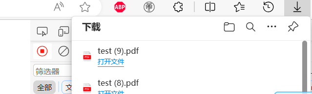
转换无问题

java调用openoffice
概述
并不是所有的项目都是springboot项目，下面将不使用springboot项目来调用openoffice服务
docx转pdf
第一步：新建maven项目

这里项目名称为openoffice-word-to-pdf2
第二步：配置maven
依赖如下：
xxxxxxxxxx271<dependencies>2 <dependency>3 <groupId>org.openoffice</groupId>4 <artifactId>juh</artifactId>5 <version>4.1.2</version>6 </dependency>7 <dependency>8 <groupId>org.openoffice</groupId>9 <artifactId>jurt</artifactId>10 <version>4.1.2</version>11 </dependency>12 <dependency>13 <groupId>org.openoffice</groupId>14 <artifactId>ridl</artifactId>15 <version>4.1.2</version>16 </dependency>17 <dependency>18 <groupId>org.openoffice</groupId>19 <artifactId>unoil</artifactId>20 <version>4.1.2</version>21 </dependency>22 <dependency>23 <groupId>com.artofsolving</groupId>24 <artifactId>jodconverter</artifactId>25 <version>2.2.2</version>26 </dependency>27 </dependencies>
jodconverter需要单独下载，因为中央仓库里没有
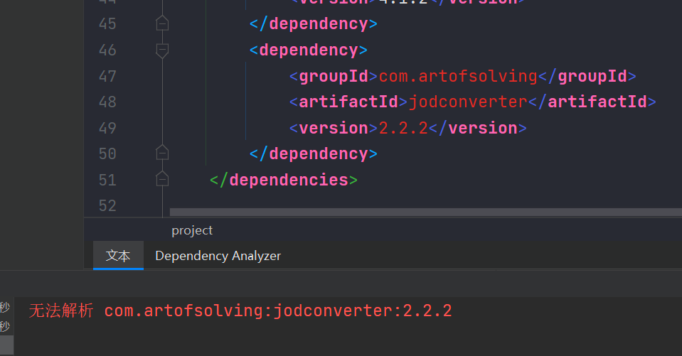
下载地址：https://sourceforge.net/projects/jodconverter/files/
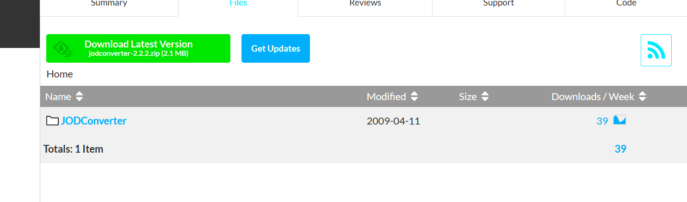
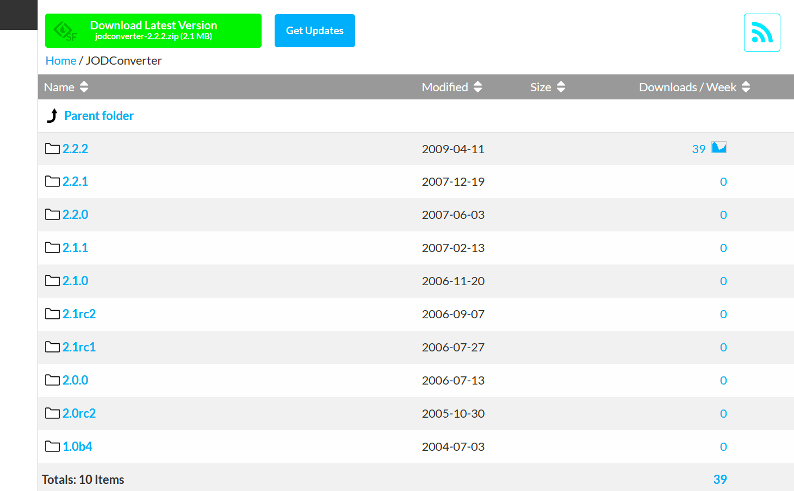
点击2.2.2版本
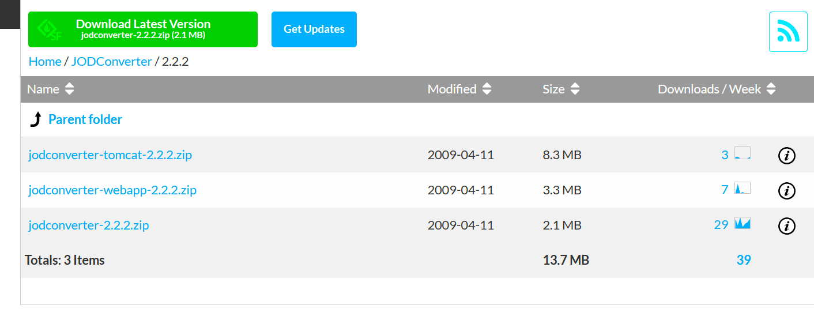
下载完成后，解压，可以得到这样的目录：

在lib目录下运行：
xxxxxxxxxx11mvn install:install-file -Dfile="jodconverter-2.2.2.jar" -DgroupId=com.artofsolving -DartifactId=jodconverter -Dversion=2.2.2 -Dpackaging=jar
或者将lib目录拷贝到项目目录下

然后再打开项目结构

选择库

点击新建，选择lib包目录


第三步：编写DocumentConverterUtil
xxxxxxxxxx2061package mao;2
3import com.artofsolving.jodconverter.DefaultDocumentFormatRegistry;4import com.artofsolving.jodconverter.DocumentConverter;5import com.artofsolving.jodconverter.DocumentFormat;6import com.artofsolving.jodconverter.openoffice.connection.SocketOpenOfficeConnection;7import com.artofsolving.jodconverter.openoffice.converter.StreamOpenOfficeDocumentConverter;8
9import java.io.File;10import java.io.IOException;11import java.io.InputStream;12import java.io.OutputStream;13import java.net.ConnectException;14import java.util.Properties;15
16/**17 * Project name(项目名称)：openoffice-word-to-pdf218 * Package(包名): mao19 * Class(类名): DocumentConverterUtil20 * Author(作者）: mao21 * Author QQ：129619324522 * GitHub：https://github.com/maomao124/23 * Date(创建日期)： 2023/11/2424 * Time(创建时间)： 23:5325 * Version(版本): 1.026 * Description(描述)： 文档转换工具27 */28
29public class DocumentConverterUtil30{31 private static SocketOpenOfficeConnection connection = null;32
33 private static DocumentConverter documentConverter = null;34
35 private static Properties properties = null;36
37 private static int serviceCheckCycle;38
39 static40 {41 InputStream inputStream = DocumentConverterUtil.class.getClassLoader().getResourceAsStream("conf/openoffice.properties");42 try43 {44 properties = new Properties();45 properties.load(inputStream);46 String host = properties.getProperty("server.host");47 Integer port = Integer.parseInt(properties.getProperty("server.port"));48 serviceCheckCycle = Integer.parseInt(properties.getProperty("serviceCheckCycle"));49 connection = new SocketOpenOfficeConnection(host, port);50 connection.connect();51 documentConverter = new StreamOpenOfficeDocumentConverter(connection);52 }53 catch (ConnectException e)54 {55 e.printStackTrace();56 System.out.println("文档转换服务连接失败");57 //throw new RuntimeException(e);58 }59 catch (IOException e)60 {61 e.printStackTrace();62 System.out.println("加载配置文件失败或者其它问题");63 //throw new RuntimeException(e);64 }65 finally66 {67 //服务检查68 new Thread(new Runnable()69 {70 71 public void run()72 {73 while (true)74 {75 try76 {77 Thread.sleep(serviceCheckCycle);78 if (isNotConnection())79 {80 System.out.println("openoffice服务异常，正在尝试重连");81 retry();82 }83 }84 catch (InterruptedException e)85 {86 e.printStackTrace();87 }88 }89 }90 }).start();91
92 Runtime.getRuntime().addShutdownHook(new Thread(() ->93 {94 if (connection.isConnected())95 {96 System.out.println("正在关闭openoffice连接...");97 connection.disconnect();98 }99 }));100 }101 }102
103 /**104 * 服务重连105 *106 * @return 重连结果107 */108 public static boolean retry()109 {110 System.out.println("尝试重连openoffice");111 String host = properties.getProperty("server.host");112 Integer port = Integer.parseInt(properties.getProperty("server.port"));113 connection = new SocketOpenOfficeConnection(host, port);114 documentConverter = new StreamOpenOfficeDocumentConverter(connection);115 try116 {117 connection.connect();118 if (isConnection())119 {120 return true;121 }122 return false;123 }124 catch (Exception e)125 {126 System.out.println("重连失败");127 e.printStackTrace();128 return false;129 }130 }131
132 /**133 * 得到当前properties134 *135 * @return properties对象136 */137 public static Properties getProperties()138 {139 return properties;140 }141
142 /**143 * 判断服务是否正常连接144 *145 * @return 成功连接为true146 */147 public static boolean isConnection()148 {149 if (connection == null || !connection.isConnected())150 {151 return false;152 }153 return true;154 }155
156 /**157 * 判断服务是否没有连接158 *159 * @return 成功连接为false160 */161 public static boolean isNotConnection()162 {163 return !isConnection();164 }165
166
167 /**168 * 文档转换169 *170 * @param sourcePath 源路径171 * @param targetPath 目标路径172 */173 public static void converter(String sourcePath, String targetPath)174 {175 documentConverter.convert(new File(sourcePath), new File(targetPath));176 }177
178 /**179 * 文档转换180 *181 * @param sourcePath 源路径182 * @param targetPath 目标路径183 */184 public static void converter(File sourcePath, File targetPath)185 {186 documentConverter.convert(sourcePath, targetPath);187 }188
189 /**190 * 文档转换191 *192 * @param inputStream 输入流193 * @param outputStream 输出流194 * @param sourceFileSuffix 源文件后缀195 * @param targetFileSuffix 目标文件后缀196 */197 public static void converter(InputStream inputStream, OutputStream outputStream,198 String sourceFileSuffix, String targetFileSuffix)199 {200 DocumentFormat sourceDocumentFormat = new DefaultDocumentFormatRegistry()201 .getFormatByFileExtension(sourceFileSuffix);202 DocumentFormat targetDocumentFormat = new DefaultDocumentFormatRegistry()203 .getFormatByFileExtension(targetFileSuffix);204 documentConverter.convert(inputStream, sourceDocumentFormat, outputStream, targetDocumentFormat);205 }206}
第四步：编写openoffice.properties
xxxxxxxxxx61# openoffice服务所在地址2server.host=127.0.0.13# openoffice服务端口号4server.port=81005# 服务连接检查周期，单位是毫秒，600000为10分钟。如果服务连接挂了，将会尝试重新连接6serviceCheckCycle=600000
配置文件位置：

第五步：编写测试类
xxxxxxxxxx311package mao;2
3import java.io.FileInputStream;4import java.io.FileNotFoundException;5import java.io.FileOutputStream;6
7/**8 * Project name(项目名称)：openoffice-word-to-pdf29 * Package(包名): mao10 * Class(类名): Test11 * Author(作者）: mao12 * Author QQ：129619324513 * GitHub：https://github.com/maomao124/14 * Date(创建日期)： 2023/11/2515 * Time(创建时间)： 0:0516 * Version(版本): 1.017 * Description(描述)： 无18 */19
20public class Test21{22 public static void main(String[] args) throws FileNotFoundException23 {24 DocumentConverterUtil.converter("./test.docx", "./test.pdf");25 DocumentConverterUtil.converter("./test.docx", "./test2.pdf");26 DocumentConverterUtil.converter("./test.docx", "./test3.pdf");27 DocumentConverterUtil.converter(new FileInputStream("./test.docx"),28 new FileOutputStream("./test4.pdf"),"docx","pdf");29 System.out.println("转换完成");30 }31}
第六步：运行查看结果
xxxxxxxxxx31十一月 25, 2023 12:17:56 上午 com.artofsolving.jodconverter.openoffice.connection.AbstractOpenOfficeConnection connect2信息: connected3转换完成
源文档内容：

转换后：
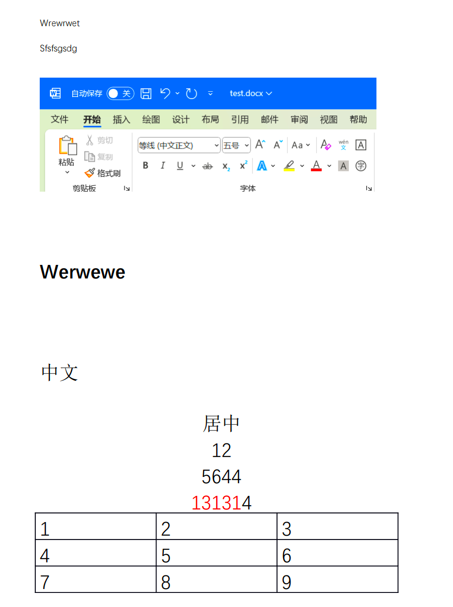
结果正确，性能在1秒内
end